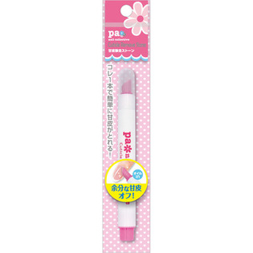

返回列表
产品名称：ｐａ 甘皮除去ストーン

ディアローラ ｐａ 甘皮除去ストーン ＿
メーカー ディアローラ
JANコード 4511692144362
商品の特徴
これ１本で簡単に甘皮処理ができる、オイル入りペン型甘皮除去ストーンです。
爪の根元が整いネイルが映える爪になります。
成分・分量
＜材質＞
本体：ＰＰ
先端：セラミック
キャップ：ＰＰ
外装：ＯＰ／ＣＰ
用法及び用量
＜使用方法＞
１．鉛筆を持つように持ち、平らな面を爪に沿わせます。
２．ペンの先端で力を入れ過ぎないように甘皮を押し上げます。
※根本に薄皮が残った場合は、平らな面で円を描くように優しく取り除いてください。